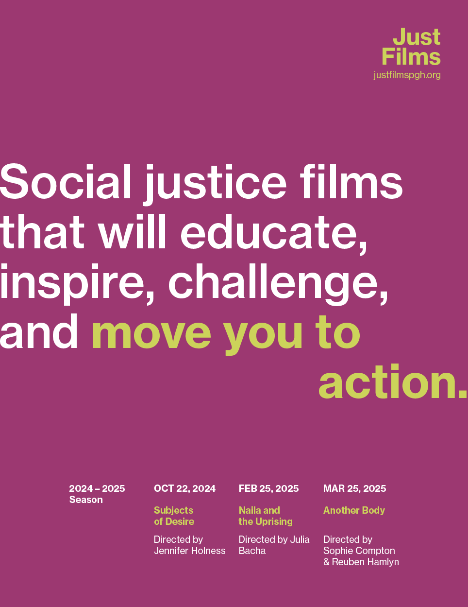
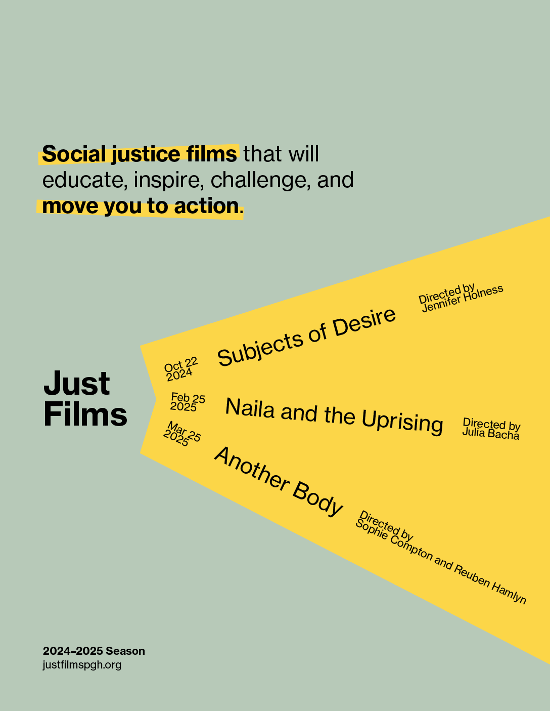

A short documentary film following the members of Student Dormitory Council (SDC) Booth
during Carnegie Mellon University's 2024 Spring Carnival.
I shot multiple interviews with members of SDC Booth, and combined the footage with b-roll
filmed through the event. My aim was to show the audience the behind-the-scenes struggles
and highlight the
dedication and hard work displayed by students for this
incredible tradition at Carnegie Mellon University.
Created as my final project for 76-292: Introduction to Film Production,
utilizing technical skills learned during the semester such as camera operation, audio
recording, and editing in Adobe Premiere Pro. My pre-production binder for this project can
be found here.
Directed, produced, filmed, and edited by Emma Tong.
late
February 2024
A playful narrative short film about a man waiting for his tardy friends. While shooting, I
focused on exposure, camera movement, and shot composition. Edited in Premiere Pro.
Directed, filmed, and edited by Emma Tong.
Christian Theology
April 2024
A short film about a strange man interviewing a Christian theology reader. Edited in
Premiere Pro.
Directed, filmed, and edited by Emma Tong, with help from Noel Limb and Stephen Tao.
"Road of Return" by Joy Harjo
October 2024
A short film set to the poem "Road of Return" by Joy Harjo. I shot and chose
metaphorical
images with the goal of matching the tone and feel of
the words. Edited in Premiere Pro; assignment for 76-358: Making the Documentary.
Filmed and edited by Emma Tong.
DESIGN


Typographic Event Series Poster for Just Films
September - October 2024
A typographic poster for Just Films, an organization committed to using the platform of film and
video to educate and promote conversations and actions in the realm of gender equity and social
justice. Throughout the design process, focused on the relationship between
content, context, composition, and meaning. Created as project in 51-261 Communication & Digital
Design Fundamentals.
My process blog for these posters can be found here.